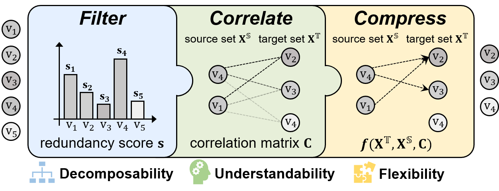
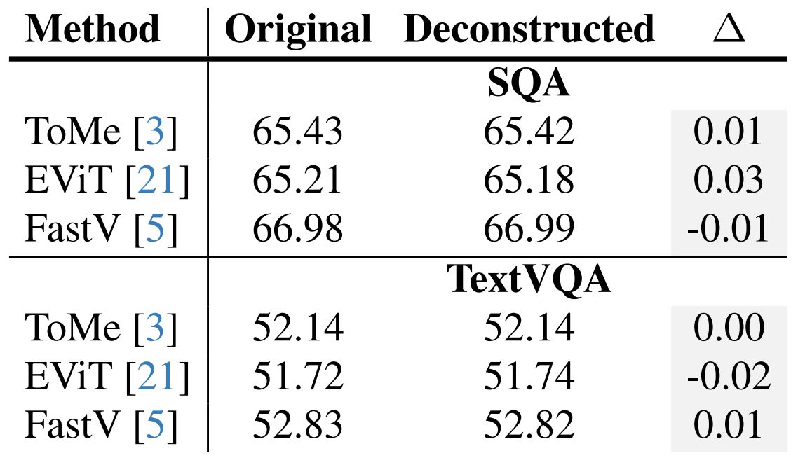
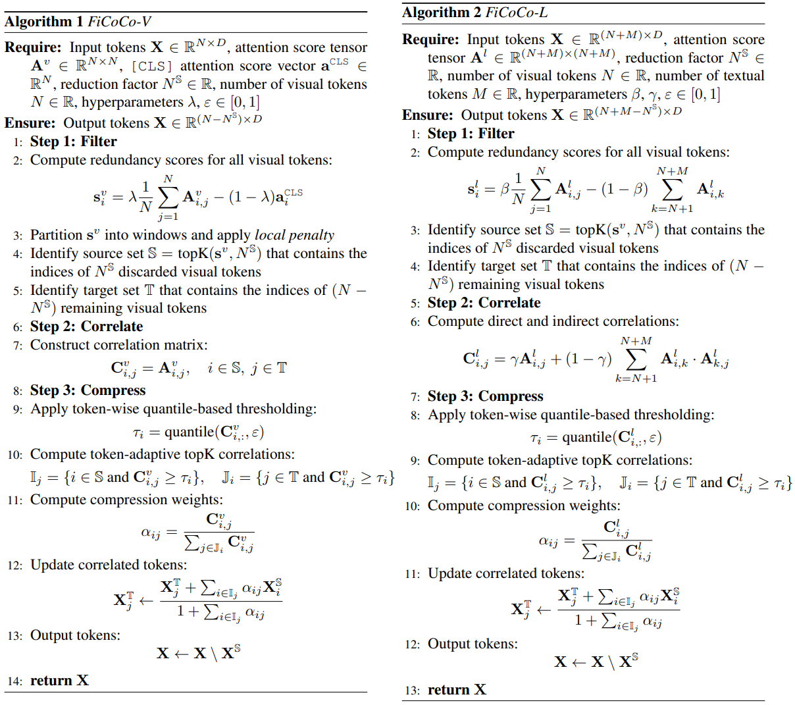
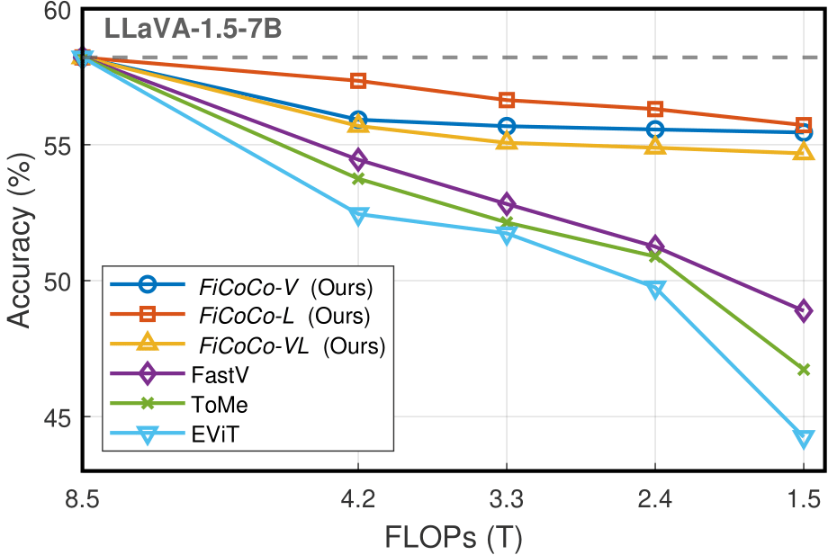

To accelerate the inference of heavy Multimodal Large Language Models (MLLMs), this study rethinks the current landscape of training-free token reduction research. We regret to find that the critical components of existing methods are tightly intertwined, with their interconnections and effects remaining unclear for comparison, transfer, and expansion. Therefore, we propose a unified ''filter-correlate-compress'' paradigm that decomposes the token reduction into three distinct stages within a pipeline, maintaining consistent design objectives and elements while allowing for unique implementations. We additionally demystify the popular works and subsume them into our paradigm to showcase its universality. Finally, we offer a suite of methods grounded in the paradigm, striking a balance between speed and accuracy throughout different phases of the inference. Experimental results across 10 benchmarks indicate that our methods can achieve up to an 82.4% reduction in FLOPs with a minimal impact on performance, simultaneously surpassing state-of-the-art training-free methods.
We propose a unified ''filter-correlate-compress'' paradigm for training-free token reduction, which includes three stages, each stage responsible for addressing a question:
(1) Filter: ''What token should be discarded?''
(2) Correlate: ''Where should discarded information be preserved?''
(3) Compress: ''How to fuse the tokens to preserve information?''
Please refer to our paper to explore how this paradigm decomposes and formulates existing methods.
The unified paradigm offers several distinct benefits:
(1) Decomposability: The paradigm unfolds the entangled token reduction into a structured pipeline with three key stages, each with standardized input and output interfaces.
(2) Understandability: Each stage within the paradigm is characterized by a well-defined design objective and clearly specifies the intermediate elements to be implemented.
(3) Flexibility: The implementation of the intermediate elements is not restricted, allowing the paradigm to accommodate existing methods and facilitate further expansion.
In the following table, we provide empirical evidence to illustrate the equivalence between the original methods and our deconstructed versions. This indicates that our paradigm can encompass existing token reduction methods effortlessly.
Based on the paradigm, we develop a series of methods named FiCoCo that efficiently reduce the amount of visual token without re-training. FiCoCo-V reduces tokens in the visual encoder, FiCoCo-L reduces tokens in the LLM decoder, and FiCoCo-VL integrates their designs to reduce tokens in both phases, respectively.
Despite the above figure, we further provide the algorithm illustration for FiCoCo-V and FiCoCo-L to clarify their distinct solutions across three stages.
Performance comparison on TextVQA benchmark:
Please refer to our paper for detailed experimental results.
@article{FiCoCo2024,
title={Rethinking Token Reduction in MLLMs: Towards a Unified Paradigm for Training-Free Acceleration},
author={Yuhang Han and Xuyang Liu and Pengxiang Ding and Donglin Wang and Honggang Chen and Qingsen Yan and Siteng Huang},
year={2024},
eprint={2411.17686},
archivePrefix={arXiv},
primaryClass={cs.CV}
}